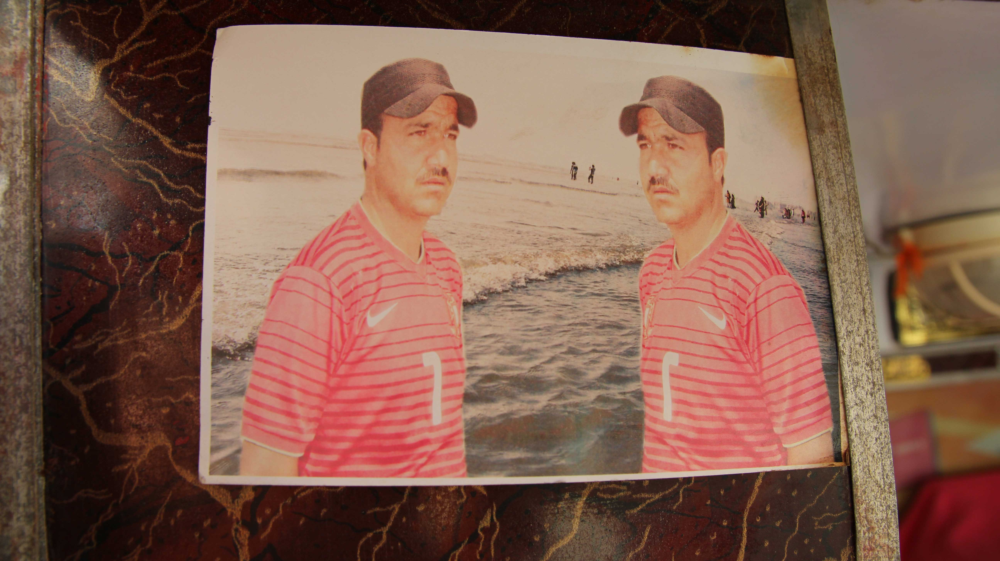

ABOUT
The ‘Tentative Collective’ is a group of people who share resources to create interdisciplinary works of art in public places. Our projects strive to be collaborative, site sensitive, and open to a diverse range of participants.
Based in Karachi, Pakistan, we have been supported generously by various individuals and organizations including the New York Foundation for the Arts, National University of Singapore and Vasl Artists’ Collective.
Core group
- Yaminay Chaudhri
- Hajra Haider
- Zahra Malkani
- Shahana Rajani
- Fazal rizvi